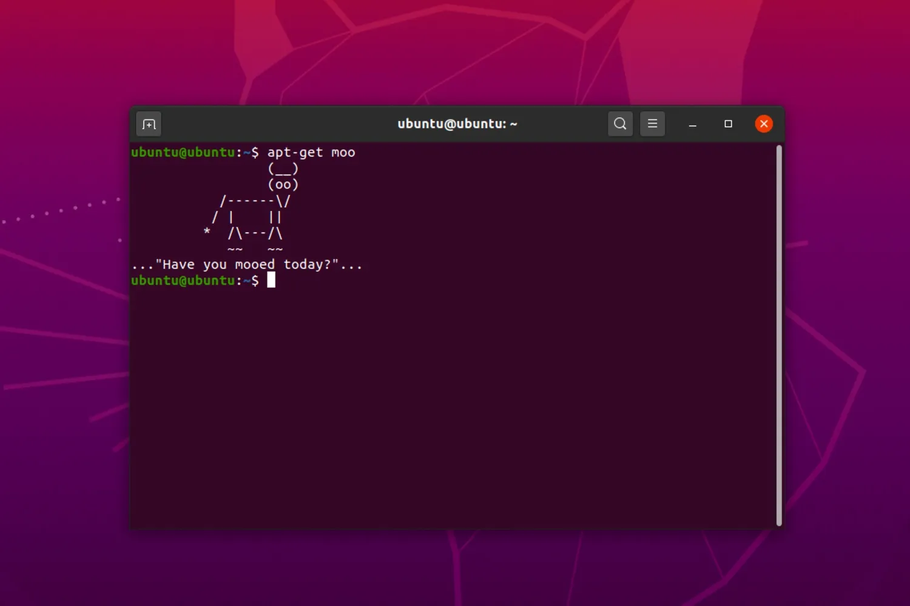

💻
WSL Linux Basics
Inhaltsverzeichnis
Einführung in WSL Linux

Windows Subsystem for Linux (WSL)
ist eine Kompatibilitätsschicht von Microsoft
ermöglicht eine Linux-Umgebung auf Windows auszuführen
Windows Subsystem for Linux (WSL)
Mit WSL kann man Linux-Befehle ausführen, Linux-Tools verwenden und vollständige Linux-Distribution installieren und ausführen.
Dies erleichtert die Entwicklung und den Einsatz von Linux-Anwendungen auf einem Windows-System erheblich.
Warum WSL verwenden?
- Nahtlose Integration: WSL ermöglicht die Verwendung von Linux-Tools direkt in Windows
- Entwicklerfreundlich: WSL erleichtert die Entwicklung von plattformübergreifenden Anwendungen
Warum WSL verwenden?
- Flexibilität: WSL unterstützt eine Vielzahl von Linux-Distributionen, die nach Belieben ausgetauscht werden können
- Leistungsfähigkeit: WSL ist sehr schnell und bietet eine native Linux-Performance
Warum WSL verwenden?
- Keine Virtualisierung: Im Gegensatz zu anderen Virtualisierungslösungen benötigt WSL keine separate virtuelle Maschine
- Kostenlos: WSL ist in Windows 10 kostenlos enthalten und erfordert keine zusätzliche Lizenzierung
Installation von WSL

Installation von WSL Installation von WSL
Grundlegende Linux-Befehle
🏗
Grundlegende Linux-Befehle
-$ ls
-$ ls
Listet Dateien und Verzeichnisse im aktuellen Verzeichnis auf.
-$ pwd
Zeigt das aktuelle Arbeitsverzeichnis (den Pfad) an.
Grundlegende Linux-Befehle
-$ cd Verzeichnisname
-$ cd Verzeichnisname
Wechselt das Verzeichnis zum angegebenen Verzeichnisnamen.
-$ mkdir neues_verzeichnis
Erstellt ein neues Verzeichnis.
Grundlegende Linux-Befehle
-$ rmdir neues_verzeichnis
-$ rmdir neues_verzeichnis
Löscht ein leeres Verzeichnis.
-$ touch dateiname.txt
Erstellt eine leere Datei
Grundlegende Linux-Befehle
-$ rmdir neues_verzeichnis
-$ rmdir neues_verzeichnis
Löscht ein leeres Verzeichnis.
-$ touch dateiname.txt
Erstellt eine leere Datei
Grundlegende Linux-Befehle -$ cp quelle_ziel
-$ cp quelle_ziel Kopiert Dateien oder Verzeichnisse.
-$ mv alte_datei neue_datei Verschiebt oder benennt Dateien oder Verzeichnisse um.
-$ rm dateiname Löscht eine Datei.
-$ rm -r verzeichnisname Löscht ein Verzeichnis und dessen Inhalt.
Grundlegende Linux-Befehle -$ cat dateiname.txt
-$ cat dateiname.txt Zeigt den Inhalt einer Datei an.
-$ more dateiname.txt Ermöglicht das Anzeigen des Inhalts langer Textdateien seitenweise.
-$ less dateiname.txt Ermöglicht das Anzeigen des Inhalts langer Textdateien seitenweise.
-$ head -n 10 dateiname.txt Zeigt die ersten 10 Zeilen einer Datei an.
-$ tail -n 10 dateiname.txt Zeigt die letzten 10 Zeilen einer Datei an.
Grundlegende Linux-Befehle -$ grep "Suchmuster" dateiname.txt
-$ grep "Suchmuster" dateiname.txt Durchsucht Dateien nach einem Muster.
-$ chmod 755 dateiname Ändert die Berechtigungen von Dateien oder Verzeichnissen.
-$ chown neuer_eigentuemer dateiname Ändert den Eigentümer von Dateien oder Verzeichnissen.
Grundlegende Linux-Befehle -$ ps
-$ ps Zeigt aktive Prozesse an.
-$ kill prozess_id Beendet einen Prozess.
-$ df Zeigt Informationen zur Festplattenauslastung an.
Weitere Linux-Befehle
-$ du Zeigt den belegten Speicherplatz für Dateien und Verzeichnisse an.
-$ tar Komprimiert und extrahiert Dateien und Verzeichnisse.
Weitere Linux-Befehle
-$ wget URL -$ curl URL Lädt Dateien aus dem Internet herunter.
-$ ping HOST Überprüft die Netzwerkverbindung zu einem Host.
Weitere Linux-Befehle
-$ ifconfig -$ ip Zeigt Netzwerkinformationen an.
Dateiverwaltung
📂
Das Dateisystem von Linux
- Das Dateisystem in Linux ist hierarchisch aufgebaut
- Das Stammverzeichnis wird als "/" bezeichnet und enthält alle anderen Verzeichnisse und Dateien
Das Dateisystem von Linux
- Die wichtigsten Verzeichnisse sind:
- /bin - enthält ausführbare Binärdateien
- /etc - enthält Konfigurationsdateien
- /home - enthält die Benutzerverzeichnisse
- /lib - enthält Bibliotheksdateien
- /usr - enthält Anwendungen, Bibliotheken und Dokumentationen
- /var - enthält variable Dateien wie Log-Dateien und temporäre Dateien
Das Dateisystem von Linux
- Das Dateisystem von Linux ist case-sensitive und erlaubt lange Dateinamen
flender != Flender
File Permissions und Ownership
- Linux verwendet ein Berechtigungssystem, um den Zugriff auf Dateien und Verzeichnisse zu kontrollieren 🔐
- Es gibt drei Arten von Berechtigungen:
- Lesen (r) 📚
- Schreiben (w) ✍
- Ausführen (x) 😎
File Permissions und Ownership
- Die Berechtigungen werden für drei Gruppen von Benutzern definiert:
- Owner - der Benutzer, der die Datei erstellt hat 🤵
- Group - die Gruppe, zu der der Owner gehört 👨🏽🤝
- Others - alle anderen Benutzer 🕺
File Permissions und Ownership
-$ chown
-$ chmod
Paketverwaltung
📦
Paketverwaltung
Die Paketverwaltung ist ein wichtiger Bestandteil von Linux-Systemen.
- Ermöglicht Installation von neuer Software
- Aktualisierung von vorhandener Software
- Prüft Abhängigkeiten
👨💻
Verschiedene Paketverwaltungssysteme
- APT (Advanced Package Tool) für Debian und Ubuntu
- RPM (Red Hat Package Manager) für CentOS und Fedora
- Pacman für Arch Linux
Verwendung der Paketverwaltung
Installation von neuer Software:
sudo apt-get install [Paketname] # für Ubuntu
sudo yum install [Paketname] # für CentOS und Fedora
Aktualisierung von vorhandener Software:
sudo apt-get update && sudo apt-get upgrade # für Ubuntu
sudo yum update # für CentOS und Fedora
Vorteile der Paketverwaltung
- Einfache Verwaltung von Software auf Linux-Systemen
- Prüfung von Abhängigkeiten
- Sichere Installation und Aktualisierung von Software
Netzwerkkonfiguration

Netzwerkconfiguration
Die Netzwerkconfiguration ist ein wichtiger Bestandteil von Linux-Systemen.
- Ermöglicht die Verbindung mit anderen Geräten und Netzwerken 💻➡💻
- Ermöglicht die Konfiguration von Netzwerkadaptern 👨💻
- Ermöglicht die Konfiguration von Netzwerkprotokollen ✍
Netzwerkadapter konfigurieren 👨💻
Netzwerkadapter werden normalerweise automatisch konfiguriert, aber können auch manuell konfiguriert werden:
- IP-Adresse, Subnetzmaske und Standardgateway festlegen
- DNS-Server konfigurieren
- Netzwerkprotokolle konfigurieren, z.B. TCP/IP
Netzwerkprotokolle konfigurieren
Linux unterstützt verschiedene Netzwerkprotokolle, darunter:
- TCP/IP
- UDP
- HTTP
- FTP
Netzwerkprotokolle konfigurieren, indem die entsprechenden Konfigurationsdateien bearbeitet werden.
Vorteile der Netzwerkconfiguration ⚙
- Ermöglicht die Verbindung mit anderen Geräten und Netzwerken
- Ermöglicht die Konfiguration von Netzwerkadaptern und -protokollen
- Ermöglicht die Optimierung der Netzwerkperformance